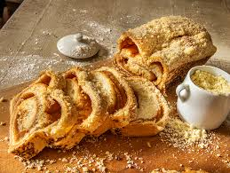

Cuca Alemã
A Cuca Alemã é um bolo tradicional do Sul do Brasil, legado dos imigrantes alemães. Caracteriza-se por sua massa fofa, cobertura de farofa doce e, frequentemente, recheio de frutas como banana, maçã ou uva.

Ingredientes
Serve 8 porções
- 2 xícaras de farinha de trigo
- 1 xícara de açúcar
- 3 ovos
- 1/2 xícara de leite
- 100 g de manteiga derretida
- 1 colher de sopa de fermento em pó
- 1 pitada de sal
- Frutas a gosto para o recheio (banana, maçã ou uva)
- Para a farofa: 1/2 xícara de farinha de trigo, 1/4 xícara de açúcar e 50 g de manteiga
Modo de Preparo
Tempo estimado: 50 minutos
- Preaqueça o forno a 180°C e unte uma forma média.
- Em uma tigela, bata os ovos com o açúcar até formar um creme claro.
- Adicione o leite e a manteiga derretida, misturando bem.
- Acrescente a farinha, o fermento e o sal, mexendo até obter uma massa homogênea.
- Despeje metade da massa na forma, distribua as frutas e cubra com o restante da massa.
- Prepare a farofa misturando farinha, açúcar e manteiga e espalhe sobre o bolo.
- Leve ao forno por 35 a 40 minutos ou até dourar e firmar.
- Retire do forno, deixe esfriar um pouco e sirva.
Dica do Chef: Experimente adicionar canela à farofa para um toque especial. Sirva a Cuca Alemã acompanhada de café fresco para um lanche típico do Sul do Brasil.